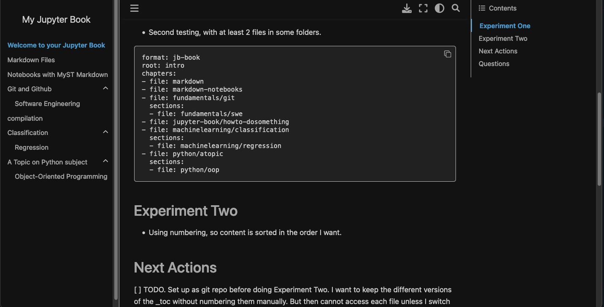
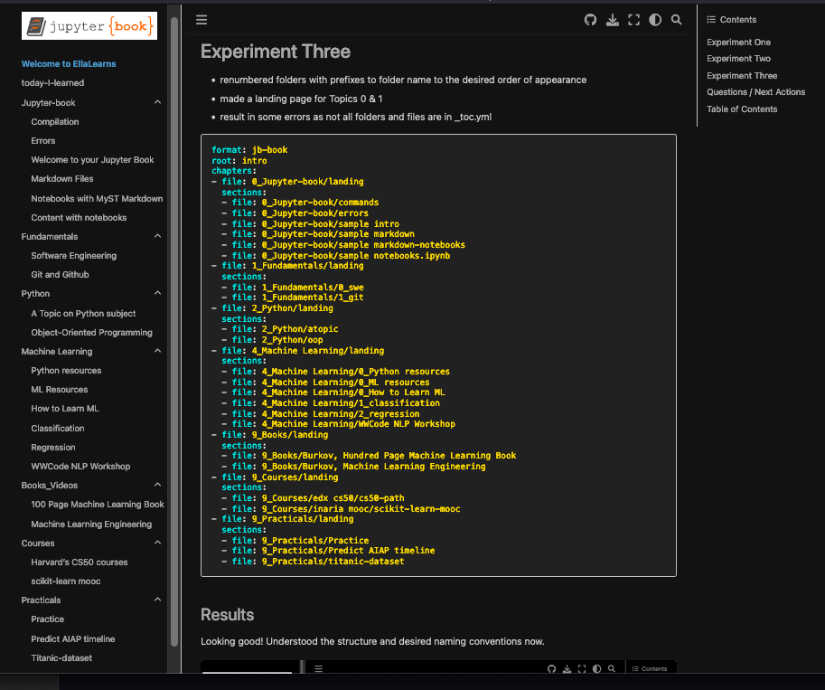

Welcome to EllaLearns#
A compilation of study notes.
Remember that the Download button to save as .html or .pdf would “print” only the current html page, not the whole jupyter-book.
Experiment One#
Added folders by
Subjectandtopicmarkdown files to see how it is compiled into a book.Not using numbering, so content is sorted alphabetically
First testing. With one file in each folder.
format: jb-book
root: intro
chapters:
- file: markdown
- file: markdown-notebooks
- file: fundamentals/git
- file: jupyter-book/howto-dosomething
- file: machinelearning/classification
- file: python/atopic
Second testing, with at least 2 files in some folders.
format: jb-book
root: intro
chapters:
- file: markdown
- file: markdown-notebooks
- file: fundamentals/git
sections:
- file: fundamentals/swe
- file: jupyter-book/howto-dosomething
- file: machinelearning/classification
sections:
- file: machinelearning/regression
- file: python/atopic
sections:
- file: python/oop
moved .md to file: section resulted in errors.
Result#

Experiment Two#
[x] TODO. Need to figure out how to do .md files as links and not in Topic.
[x] TODO. Using numbering, so content is sorted in the order I want.
[x] TODO. Set up as git repo before doing {ref}experiment-two
note: ToDos need to be
in CAPS
have a checkbox
before it is gathered by the TODO extension in a tree
Experiment Three#
renumbered folders with prefixes to folder name to the desired order of appearance
made a landing page for Topics 0 & 1
result in some errors as not all folders and files are in _toc.yml
format: jb-book
root: intro
chapters:
- file: README
- file: 0_Jupyter-book/landing
sections:
- file: 0_Jupyter-book/commands
- file: 0_Jupyter-book/errors
- file: 0_Jupyter-book/sample intro
- file: 0_Jupyter-book/sample markdown
- file: 0_Jupyter-book/sample markdown-notebooks
- file: 0_Jupyter-book/sample notebooks.ipynb
- file: 1_Fundamentals/landing
sections:
- file: 1_Fundamentals/0_swe
- file: 1_Fundamentals/1_git
- file: 2_Python/landing
sections:
- file: 2_Python/atopic
- file: 2_Python/oop
- file: 4_Machine Learning/landing
sections:
- file: 4_Machine Learning/0_Python resources
- file: 4_Machine Learning/0_ML resources
- file: 4_Machine Learning/0_How to Learn ML
- file: 4_Machine Learning/1_classification
- file: 4_Machine Learning/2_regression
- file: 4_Machine Learning/WWCode NLP Workshop
- file: 9_Books/landing
sections:
- file: 9_Books/Burkov, Hundred Page Machine Learning Book
- file: 9_Books/Burkov, Machine Learning Engineering
- file: 9_Courses/landing
sections:
- file: 9_Courses/cs50-path
- file: 9_Courses/scikit-learn-mooc
- file: 9_Practicals/landing
sections:
- file: 9_Practicals/Practice
- file: 9_Practicals/Predict AIAP timeline
- file: 9_Practicals/titanic-dataset
Results#
Looking good! Understood the structure and desired naming conventions now.

Questions / Next Actions#
[x] TODO, if want to convert one markdown file or several files into an article, how do I go about doing that?
[x] TODO. Is myst errors due to some missing package?
It was perhaps because _config.yml was renamed to _config_v0.yml. Made a copy with my edits. No more errors.
Yes, missing packages needed :
jupytext
And then to run the command, to use MySt version of markdown, the .md file need the yaml frontmatter
jupyter-book myst init today-i-learned/intro.md --kernel python3
And to use myst syntax instead of markdown
{ref}MyST syntax lecture <myst_cheatsheet>`
So, for my error: {ref}experiment-two
Source: https://jupyterbook.org/en/stable/reference/cheatsheet.html
[ ] TODO. How to generate .pdf instead of html?
Need to install more packages. Either
pyppeteerortexlive